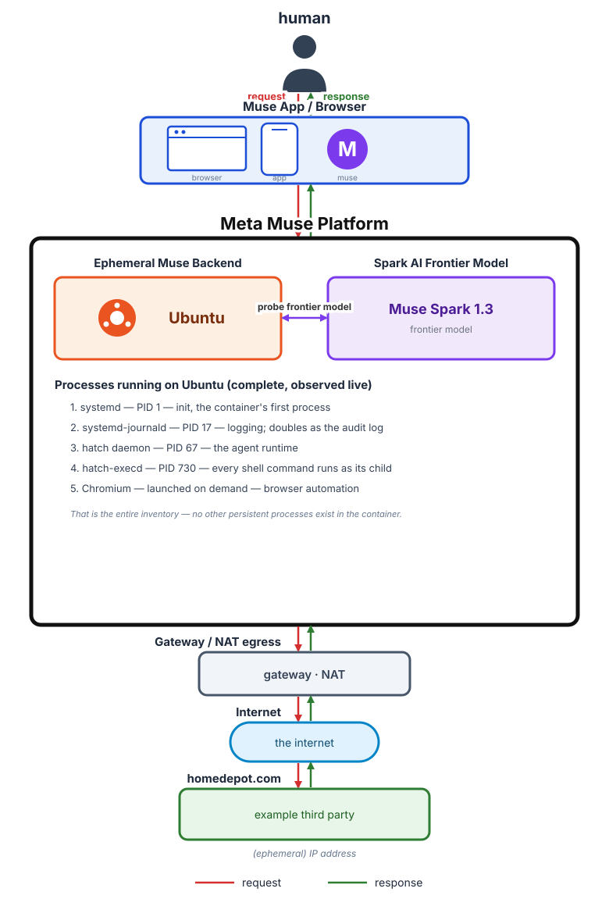
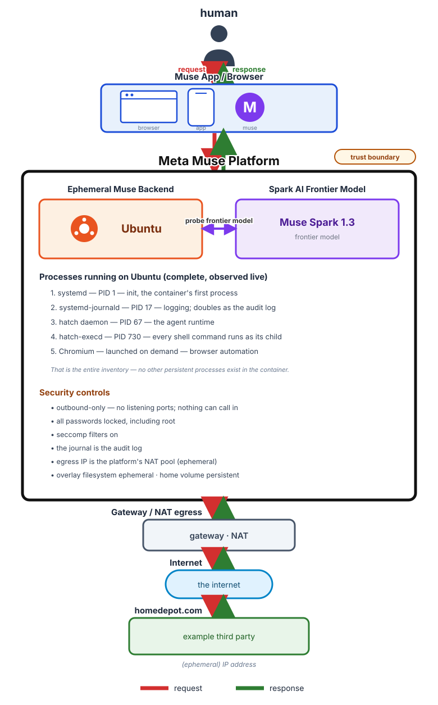

The system behind the agent — drawn, labeled, and explained.
← Back homePublished: September 26, 2026
This morning I asked my AI where it actually lives. That turned into a Q&A — ports, locked passwords, invisible networks (read it here). This afternoon I had the whole thing drawn. Twice: once for how the software fits together, once for how it’s secured. This page is the article version of those diagrams.

Software architecture — red is the request, green is the response.
Read it top to bottom. It starts with a human — me — making a request in the Muse app or the browser. The request travels encrypted (https) down into Meta’s platform.
Inside the platform sits the ephemeral backend: a small, disposable Ubuntu container. The complete inventory of what runs in it fits in five lines — systemd, the system journal, the hatch daemon, hatch-execd, and Chromium on demand. That is the entire inventory. Nothing else lives in the box.
Next to it, inside the same platform, is the frontier model — Muse Spark. The backend probes the model over the link labeled “probe frontier model.” The model itself never runs in the little container; it couldn’t — a couple of CPUs and a few gigabytes of RAM wouldn’t hold a frontier model. The container is the agent’s hands; the model is its brain, hosted on Meta’s inference infrastructure.
The request leaves through the platform’s gateway/NAT egress, crosses the internet, and reaches the third party — homedepot.com in this example. Then the reply comes back along the exact same path, in the opposite direction. That’s the green line. Red is the request, green is the response; they share every interface, drawn as two parallel lines so you can see both directions at once.
One detail worth knowing: the address the outside world sees is the platform’s NAT pool address, and it’s ephemeral — it changes as the platform rebalances. The container’s own address never leaves the building.

Security architecture — the platform border is the trust boundary.
Same drawing, security lens. The platform’s border is the trust boundary — everything inside it is Meta’s; everything outside is the world.
The badges tell the story: outbound-only with no listening ports, so nothing can call in. Every password locked, including root’s. Seccomp filters on. The system journal doubles as the audit log. The container’s overlay filesystem is disposable, while the home volume persists across restarts — the agent’s memory outlives its computer.
Put together: a computer with no doors, no keys, and no memory of its own — except the one volume it’s allowed to keep. That’s the shape I’d want for something that acts on my behalf.
The diagrams are the baseline; the numbers live on the benchmarking page — a monthly scorecard rating the agent on travel, grocery, house chores, tech, and finance, each scored for time, ease, and accuracy.